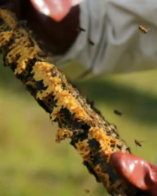

July Beekeeping Tasks UK
Last updated: 1 May 2026

July sits at the heart of the beekeeping season for many UK beekeepers. Colonies are often at or near their peak strength, supers can be heavy with honey and you may be planning your first honey extraction. At the same time, you still need to keep an eye on swarm activity, brood health and varroa.
July sits within the main Summer Beekeeping UK period, alongside June and August. It is the point where honey production, swarm follow-up, super management and late-summer varroa planning begin to overlap.
This guide is part of the BeezKnees Year in the Apiary – monthly beekeeping calendar. It builds on the honey flow and follow-up work of June and focuses on July beekeeping tasks in the UK: managing honey supers and early harvests, continuing inspections and swarm checks, monitoring varroa and keeping good records during mid-summer. It works especially well alongside Extracting Honey, Varroa Monitoring Methods, Varroa Management and Swarm & Queen as you move toward August, when varroa planning and later-season colony management become increasingly important.
Mid-summer gets busy quickly
Keep harvest notes, super changes and health checks in one place
July often means inspections, honey decisions and varroa awareness all at once. Recording them against the right hive makes later summer management much easier.
July at a Glance – Mid-Summer Priorities
Bee Behaviour
- Large, active colonies at or near peak size
- Strong foraging on mid-summer nectar sources
- Swarm risk reduced in some areas, but not gone
Key Jobs for the Beekeeper
- Regular inspections and swarm checks
- Managing supers and planning honey harvests
- Monitoring brood health, temperament and varroa signs
Risks to Watch
- Missed queen cells and late swarms
- Supers becoming congested or honey granulating in comb
- Health issues hidden by large colony populations
What Your Bees Are Doing in July
In July, colonies are typically working hard on mid-summer flows: lime trees, clover, brambles and a wide range of garden plants, depending on your area. Brood nests are still substantial and forager numbers remain high, though new brood rearing may begin to level off later in the month as the season progresses.
Swarm pressure may ease compared with May and June, but it does not disappear everywhere. Older queens, congested hives or sudden changes in nectar flow can still trigger swarming, so it is worth understanding swarm control and splitting options. Your inspections now balance honey management, health checks and ensuring colonies remain queenright.
Inspections and Swarm Checks in July
Many beekeepers move to inspections roughly every 7–10 days in July, adjusting the schedule based on how settled their colonies feel. You still need to keep an eye on queen cells and space, but you may also be trying to avoid over-handling bees in hot weather.
- Confirm colonies are queenright – look for eggs and young larvae.
- Monitor brood pattern and brood area size compared with earlier months.
- Check for any queen cells and decide if they represent supersedure or swarming.
- Ensure there is enough space in brood and supers to avoid congestion.
- Note any changes in temperament – sustained aggression or nervousness can be a reason to review queen quality later.

For more on how to handle frames and carry out systematic inspections, see the hive management guide. If colonies are still showing swarm signs later than expected, it is worth reviewing swarm prevention so that late-season swarm pressure does not catch you out.
Do not lose track between visits
Still seeing queen cells, late swarms or uncertain colony changes?
July can look calmer than spring, but important details still matter. A clear digital record helps you spot patterns and follow up properly on the next inspection.
Honey Flow, Supers and Harvest Planning
July is often when beekeepers begin to think seriously about honey harvests. Some may remove early crops such as oilseed rape or spring honey; others may be building towards a later harvest depending on local forage and weather.
- Most cells on a frame are capped with white wax and look "dry" and finished.
- A gentle shake of the frame does not result in nectar dripping from uncapped cells.
- Supers feel noticeably heavy when lifted or tipped from behind.
When you are confident honey is ripe, you can plan how to clear bees from supers and how you will extract. Your plan will depend on the equipment and space you have available – whether at home or in a dedicated extraction room. For a step-by-step overview of removing, extracting and handling honey safely, read Extracting Honey.
Clearing Bees from Supers and Handling Wet Combs
Removing honey without causing chaos in the apiary takes a bit of planning. There are several common methods for clearing bees from supers; it is worth learning the pros and cons of each and choosing one that suits your setup and temperament.
- Bee escape boards: Placed between brood box and super and left in place for 24 hours to allow bees to move down.
- Gentle brushing: Removing frames from the hive and brushing bees off into the brood box.
- One-way clearer boards and other systems: Various designs that let bees leave supers but not re-enter.
After extraction, you will have "wet" supers coated with traces of honey. Many beekeepers return these to strong colonies in the evening for bees to clean up, taking care not to set off robbing. This is easier to manage when entrances are reduced and other food sources are still available.
Comb, Frames and Hive Layout in July
July is also a good time to take stock of comb condition and hive layout. While you may not want to make major changes during the busiest nectar flow, you can start to plan which frames will be rotated out later in the year and which hives may need equipment upgrades.
- Identify very old, dark brood frames to replace as part of your comb rotation plan.
- Check that brood boxes, supers and floors remain sound and weatherproof.
- Note any hives that would benefit from improved stands or better access paths before winter.
You can find more detail on cleaning, maintenance and comb management in the hygiene guide and the equipment guide.
Health Checks and Varroa Awareness in July

Large, productive colonies can sometimes mask health issues until they become advanced. July is a good time to look carefully at brood, adult bees and general hive condition to spot problems early. Varroa-related issues, such as deformed wing virus, may become more obvious as the season progresses.
- Watch for patchy brood, sunken cappings, discoloured larvae or bad smells.
- Note any bees with deformed wings or other obvious signs of virus.
- Use formal monitoring methods as part of your varroa management plan and record your results.
The bee diseases overview and detailed pages on bacterial diseases, viral diseases and bee pests and parasites offer more background, while the varroa management guide explains monitoring and treatment options in more depth. July is also a good time to review varroa monitoring methods and begin planning ahead with the varroa treatment calendar.
Record Keeping, HiveTag and Learning from July
With honey, supers, inspections and health checks all happening at once, July can feel very busy. Good, concise records can turn that activity into useful information you can review later when planning for next year.
- Inspection dates, weather and main forage sources.
- Notes on queen cells, swarm control and any late swarms that occurred.
- Which supers were added, removed and extracted – and roughly how much honey they yielded.
- Varroa monitoring results and any emerging health concerns or treatments.
The HiveTag web app can make it easier to log these details for each hive or apiary, so you are not relying on memory alone when you review the season in the autumn or winter. This becomes especially useful in July when honey harvest decisions, varroa monitoring results and later-season treatment planning may all be developing at the same time.
Continuing education remains valuable too. Association meetings, study groups and structured reading – such as the guides on getting started and honeybee behaviour – can deepen your understanding of what you see during inspections.
Harvest and health notes matter
HiveTag helps keep July records usable later
When you come to review the season, the useful details are the ones you wrote down at the time: harvest dates, super yields, varroa checks and colony condition. HiveTag keeps those notes organised by hive.
Forage and Helping Pollinators in July
July can be rich in forage, but it can also include dry spells or gaps between flows in some locations. Supporting a variety of flowering plants and providing water can benefit both your bees and wild pollinators.
- Maintain flowering areas in gardens and community spaces where possible.
- Provide shallow water sources with stones or floats so insects can drink safely.
- Avoid or minimise pesticide use, especially when plants are in flower.
For more ideas on planting and garden management, visit the bee gardening guide and the broader Help the Bees section.
Emergency Scenarios – When Things Go Wrong in July
- A late swarm leaves a colony weak and struggling just as flows taper off.
- A queen is lost during manipulations and the colony becomes unsettled or queenless.
- Disease signs that were subtle in spring become more obvious in large summer colonies.
When serious issues arise, seek advice promptly from experienced mentors, your local association or the National Bee Unit. The sections on bee diseases and bee stings and safety provide useful background information for dealing with difficult situations safely.
July Beekeeping FAQ – UK Beekeepers
Many beekeepers inspect every 7–10 days in July, adjusting the frequency based on local swarm pressure, weather and how settled individual colonies feel. The goal is to balance awareness with not disturbing bees more than necessary.
Yes, especially in areas where flows are strong or where colonies have older queens. Swarm risk may be lower than in May and June, but it is still wise to look for queen cells and manage space sensibly.
Honey is typically ready when most cells are capped and the comb looks fully finished. A simple shake test can give extra confidence that nectar has been ripened properly. Only remove supers when you are sure bees no longer need that honey for immediate use.
Common methods include bee escape boards, brushing bees gently back into the hive and other one-way clearer systems. The best choice depends on your equipment, the number of hives and how your bees respond. Aim to work calmly and avoid spilling honey in the apiary.
Yes. If nectar is still coming in and bees are filling existing supers, adding more space can prevent congestion and give you extra honey storage. Keep notes on which supers were added when so you can plan extraction sensibly.
Watch for patchy brood, odd smells, deformed wings, unusual aggression or sudden drops in colony strength. These signs can indicate disease or varroa-related stress. Seek advice if you are unsure what you are seeing.
July is a useful month to assess varroa levels and their impact. This information can shape your treatment strategy later in the summer or early autumn, when many beekeepers carry out major varroa control. Review Varroa Monitoring Methods and the Varroa Treatment Calendar (UK) if you need a clearer plan.
They should keep calm, stay at a safe distance and contact a swarm collector rather than trying to move the bees. The Report a Swarm page explains what swarms are, why they occur and how to find local help.
The HiveTag web app lets you record inspections, queen cells, super status, honey harvests and varroa observations in one place. Clear records make it much easier to review what worked well when you plan for next season.
July builds on the spring and early summer work described in the May and June guides, and it sets up the colonies you will carry into August and beyond. Reading this page alongside the other Year in the Apiary pages gives a clearer picture of how tasks evolve over the full season.
You can explore the wider beekeeping guides on this site, including hive management, equipment, varroa management, bee diseases, hygiene and helping pollinators, to build a more complete view of what your bees need throughout the year.
From guide to action
Use HiveTag alongside your July hive work
Keep this page for reference, then record harvest decisions, super changes, varroa notes and colony condition as they happen. That is what turns a busy July into useful records for later.
What to Read Next from This July Guide
If you are planning a honey harvest, checking mite levels or preparing for late-summer management, the next pages to read are Extracting Honey, Varroa Monitoring Methods, Varroa Treatment Calendar (UK), Varroa Management, Swarm & Queen, Bee Health Checker and August Beekeeping Tasks.
Use this July guide together with the rest of the Year in the Apiary calendar to keep your beekeeping organised and responsive through the height of the season. From here, continue into August, revisit June if you are reviewing how honey flow and swarm follow-up developed, and use key support pages such as extracting honey, varroa monitoring methods, varroa treatment calendar, varroa management and bee health checker to connect July honey harvest and health checks with the season ahead.